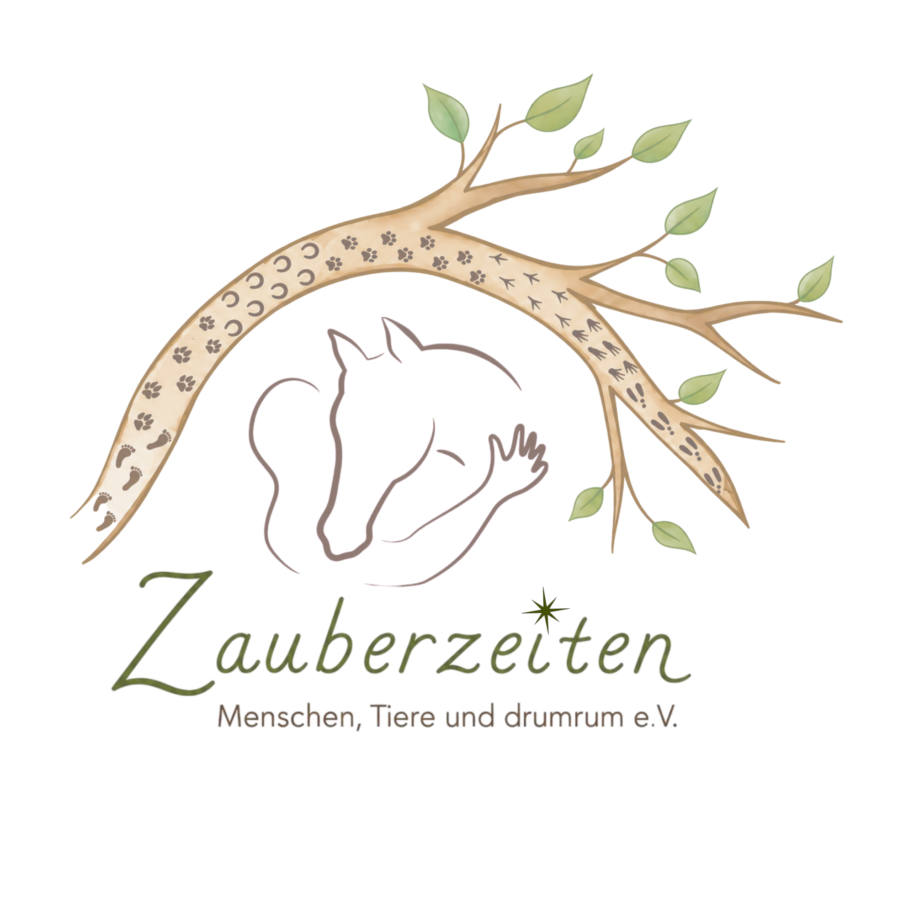
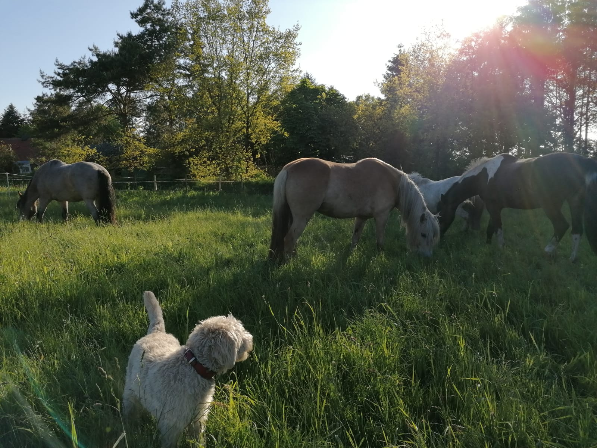

Inklusive pferde- und tiergestützte Interventionen
Herzlich willkommen bei Zauberzeiten
Menschen, Tiere und Natur einander näher bringen – Naturerlebnisse für jung und alt auf dem Bieberhoff in Aurich.

Der gemeinnützige Verein Zauberzeiten macht es sich zur Aufgabe, Menschen, Tiere und Natur einander näher zu bringen, Bewusstsein füreinander zu schaffen und einen respektvollen, nachhaltigen Umgang zu pflegen.
Wir möchten Menschen begleiten, die in ihrem Leben Unterstützung brauchen. In Zusammenarbeit mit unseren Pferden und all den anderen Tieren wollen wir Momente schaffen, die stärken, glücklich und selbstbewusst machen. Leben und Erfahrungen in der Natur, Dinge mit den Händen schaffen, Entschleunigung, Lebensfreude, Nähe zu Tieren .. all das soll die Lebensqualität erhöhen, und das gilt nicht nur für beeinträchtigte Menschen, sondern für alle gleichermaßen. Auch wenn unser Hauptklientel Kinder und Jugendliche sind, so bieten wir unsere Unterstützung für Menschen jeden Alters an. Die Angebote finden im Einzelsetting, paarweise oder in Familien- oder Gruppenkonstellationen statt.
Unser Ziel ist es, dass die Menschen hier immer etwas glücklicher, mutiger oder inspirierter nach Hause gehen, als sie gekommen sind.
Der Verein Zauberzeiten – Menschen,Tiere und drumrum e.V. hat sein Zuhause auf dem Bieberhoff in Aurich. Hier finden die meisten Angebote statt. Darüber hinaus werden aber auch Veranstaltungen und Projekte auf anderen Höfen oder an anderen Orten durchgeführt.
Kontakt
Bei Fragen oder für ein erstes Informationsgespräch nehmen Sie gern Kontakt auf.
Tina Bieber
Blockhauser Weg 6, 26605 Aurich
Tel.: 04941 / 9238414
E-Mail: zauberzeiten@bieberhoff.de